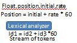

Higher level language ( Example: C, C++, Java ) কে Lower Level language এ Convert করে থাকে । সাধারণত Compiler Translator হিসেবে কাজ করে থাকে।
Pre processor – এর কাজ সাধারণত ২টি ।
File Inclusion সাধারণত আমাদের ব্যবহার করা source code এর হ্যাশ #include থাকা tag remove করে দেই। যেমন:
আমরা আমাদের Source Code গুলোতে সাধারনত অনেক সময় define use করে থাকি একটি variable কে অনেক জায়গায় ব্যবহার করবার জন্য। Macro Processing সাধারনত সেই হ্যাশ #define variable কে remove করে থাকে এবং Pre-Processing সেটাকে modified source code / Pure High level Language এ পরির্রতন করে থাকে। Example:
এর পরের কাজ হল Compiler এর। Compiler সাধারণত pure high level language কে convert করে Assembly Program এ পরিবর্তন করা । এর পরে আমরা যে code টি পাব সেটা পুরোপুরি HLL ও না আবার সেটা পুরোপুরি Assembly ও না। মাযহামঅ্যাী ও না।
Assembler এর পরের Relocated Machine Code এ পরিবর্তন করবে। আর এইটা হল পুরোপুরি Binary File(Object Code) । আমরা যদি Programming করে থাকি তবে আমরা যানি যে আমরা যদি কনো soure code compile দিয়ে run করাই তবে সেই file টার সাথে আরো ২টি file তোরি হয়ে থাকে তার মধ্যে .O/Obj। সেই file টি ( Relocated Machine Code ) নামে পরিচিত। Relocated Machine Code বলতে বুঝাই ঃ ্যোখুন আমাদের Main Memory তে আমরা আমাদের Code টি save করে রাখি এবং যে জাইগাই থাকে সেটাকে বুহযহাই । আমরা যে কোনো জাইগাই রাখি না কেনো সেটা Main Memory তে save থাকে সেটাকে বুঝাই।
Linker এর কাজ হলো আমাদের বযাহার করা বিভিন্ন Library Function , file যেমন ঃ stdio.h , math.h, mycreatedheader.h এ আমদের define করা variable অথবা Function এর সাথে একটি Link তইরি করা । আর এটতা হল linker এর মুল কাজ ।
Compiler Processing এ আমরা সাধারণত ২টি প্রক্রিয়া করে থাকি সেতা হল Translation of code Hll to Assembly এবং Execution। Static Linker এর কাজ সাধারণত execution এর আগে একটা file এর সাথে অন্য file এর যে Link সেটা সম্পূর্ণ করা। Static Linker C তে ব্যবহার করা হয় আর Dynamic Linker সাধারণত Java তে ব্যবহার করা হয় ।
Loader এর কাজ হল আমাদের এখুন পর্যন্ত পাওয়া code [mycode.c , mycode.o , library files ] Main Memory তে load করে নেওয়া । এর পরে আমরা execution code পাব এবং আমরা execution time এর উপরে আমরা input দিতে পারব এবং output পাবো ।

Compiler এর বিভিন্ন ধাপ বা Compiler আসলে কন কোন ধাপে কাজ করে সেগুলো আমরা জানব ঃ
# উপরের ধাপ গুলকে আমরা আবার ২টা Phase / Modulo তে ভাগ করতে পারি । কারণ আমদের Compiler Design এর সময় ২টা জিনিস লক্ষ্য রাখতে হবে এমন অনেক জিনিস আছে যা Independent ( যেগুলো সব Platform এ কাজ করে আর অনেক বিষয় জা Dependent যা সুধু মাত্র একটি Platform এ কাজ করে ) । তাই আমরা Compiler Design এর ধাপ গুলকে ২টা ধাপ এ ভাগ করেছি ঃ
LSSI (Lexical Analyzer, Syntax Analyzer ,Semantic Analyzer, Intermediate code Generator ) Part .
CT ( Code Optimizer and Target Code Generator) Part.
Lexical Analyzer আমাদের Code এর String গুলকে Number of Tokens এ পরিবর্তন করে দেই । এটাকে আমরা Scaner ও বলে থাকি । কারণ Lexical আমদের code কে scan করে আমাদের ব্যবহার করা variable , keywords কে আলাদা আলাদা করে tokens এ পরিবর্তন করে দিবে ।
Lexical Analyzer থেকে পাওয়া tokens গুলকে Syntax Analyzer Parser Tree/ Syntax Tree তে পরিবর্তন করে দিবে ।
Syntax Analyzer থেকে পাওয়া syntax tree টি Varified কিনা সেটা check করবে আর সেটা না হলে Error Generate করবে আর আই কাজ করে থাকে আমাদের Error Handler । এটাকে বলা হয় Semantically Varified ।
Sematical Analyzer থেকে পাওয়া Varified/Meaningful Syntax Tree টা চলে যাবে Intermediate Code Generator এর কাছে Intermediate Code Generator সেই Syntax Tree টাকে Intermediate Representation দিবে । এম্ন একটা Representation দিবে যেটা High Level Language ও না আবার Low Level Language ও না । আমরা অনেক রকম Intermediate code Generator Use kore থাকি কিন্তু সব থেকে পপুলার হল 3 Addressing Code Generator ।
আমাদের ব্যবহার করা Source Code টিকে Reduce করে থাকে । মানে আমাদের code এর লাইন সংখা কমাই দেই ।
এইটার কাজ হল আমাদের optimized code টিকে আমাদের Target Code এ পরিবর্তন করে দিবে ( এখানে Assembly Code এ পরিবর্তন করে দিবে ) ।
আমাদের LSSICT (Lexical Analyzer, Syntax Analyzer ,Semantic Analyzer, Intermediate code Generator,Code Optimizer,Target Code Generator ) এর ধাপ গুলো নিয়ে কাজ করার জন্য যার সাহায্য নিব সেটা হল Symble Ttable Manager । কারণ এখানে আমাদের Source Code আর Object Code , Library Code গুলো Save থাকবে। আমাদের ব্যবহার করা Source Code, Parser Tree, Syntax Tree,Semantical Varified Code আর সর্বশেষ Target Code Save থাকবে আর আমরা ওই খান থেকেই সব কাজ গুলো করব।
LSSICT এর ধাপ গুলতে কোন Error দেখা দিলে Error Handle করার কাজ করে থাকে Error Handler।
#LSSI (Lexical Analyzer, Syntax Analyzer ,Semantic Analyzer, Intermediate code Generator ) এই টুকু ধাপ কে আমরা একটা একটা ধাপ এ নিতে পারি আর CT ( ) কে আমরা আরেকটা ধাপ এ নিতে পারি। এভাবে Compiler কে ২টা ধাপে ভাগ করলে তাকে 2 Pphase Compiler বলবে ।
# আমরা যদি LSSICT কে একটা ধাপে নিয়ে আসি এবং একসাথে কাজ গুলো গননা করে থাকি তবে সেটাকে 1 Phase/Modulo Compiler বলবে।
# L to I পর্যন্ত অংশ কে Frontend/Analysics Part বলা হয় আর C to T পর্যন্ত অংশ কে Backend/Synthesics Part বলে । Frontend টা কিন্তু Independent আপনি যেকোনো Platfrom use করতে পারেন এইটাতে কোন Problem ( as like windows, Linux ) হব না আর এইটা Matter ও করে না কিন্তু Backend টা Dependent । সুধু মাত্র Backend টা পরিবর্তন করেই আমরা নতুন Compiler বানাতে পারব ।
Example :
Lexeme হচ্ছে sequance of strings। মানে হচ্ছে Meaningful Character . Example : position , initial , rate ;
Lexical Code গুলকে Number of Strings এ পরিবর্তন করে দিবে আর Source Code এ যদি বেশি সংখ্যক Space থাকে তবে সেটা Remove করে দিবে আবার আমাদের Code যদি Comments থাকে তবে সেটাও Remove করে দিবে Lexical Analyzer । আবার আমাদের code এ বযভের করা Keywords , Identifier & Recognizing of Constant গুলো আলাদা করে দিবে এবং সেগুলো Tokens এ পরিনত করে দিবে । আমাদের প্রশ্ন হল Lexical Analyzer কিভাবে চিনবে যে কোনটা Indentifier , কোনটা Identifier না । সেই জন্য Lexical Analyzer কে কিছু Rules of Pattern দিয়ে দেওয়া হই যাতে করে Lexical Analyzer বুঝতে পারে যে কোনটা Identifier আর কোনটা Identifier না । Example : l ( l + d )* [ set of rules ] যেটাকে আমরা Pattern বলে থাকি । যেমন ঃ position হ্যাঁ এইটা একটা Tokens কারণ যে এইটা আমাদের l(l+d)* Pattern মেনেছে তাই ।
Token হল Number of Strings আর আমাদের একটা Pattern মেনে কাজ করবে যে । Example : float position , initial , rate ; এখানের float ও কিন্তু token কিন্তু সেটা আমাদের Symble Table Manager এ আসবে না কারণ Lexical Analyzer এর আগে থেকেই জানা আছে যে float এর token কি তাই , কারণ এইটা একটা keyword । তাই সেটা Symble Table Manager এ Save থাকে না । আরও বাদ যাবে আমাদের ব্যবহার করা কমা ( , ) , সেমিকলন ( ; ) । এইটা আমরা একটা BFS এর State এর দিকে নজর দিলেও দেখতে পাই যে সে একটা নিয়ম মেনে Travel করে থাকে ।তার পরে একটার পরে আরেকটা Base Travel করে তেমনি Lexical Analyzer প্রতিটা Character কে check করে state মেনে এবং সেটা Keyword কিনা যাচাই করে তার পরে Symble Table Manager এ save করে । Example :
Tokens Example :
id1 = id2 + id3 * 60 ;
এই input কে Synatx Analyzer input হিসেবে নিবে এবং কোন Grammar এর rules কে Follow করবে এবং Parser Tree তে পরিনত করবে । Rules Example :
#আমরা জখুন Parse Tree কে Compress করব তখুন আমরা পাব Syntax Tree । Parse Tree কে যখুন আমরা Compress করব তখুন Oparator গুলো হবে internal Node আর Oparand গুলো হনে Leave Node ।সুতরাং আমরা তখুনি Syntax Tree পাব যখুন Tokens গুলো একটা Rules মেনে Parser Tree তে রুপান্তর হবে । আর যদি এই কাযে rules না follow করে তবে সেটা Hande করার দায়িত্ত Error Handler এর । এই জিনিষ টা বুঝার জন্যে আমরা একটা উদাহরন দেখি তাহলেই বুঝে যাব । Example :

এইটা থেকে আমরা Parser Tree পাব না কারণ এইটা আমাদের Rules Follow করে না ।
Syntax Tree কে Semantic Analyzer কে Input হিসেবে নিবে এবং একটা Syntax Tree দিবে যেটা Semantically Varified । Example :
এই উদাহরনে Grammatically কোন ভুল নাই তবে এইটা Meaningful না । এই Program টা float return করবে কিন্তু আমরা ব্যবহার করেছি Character যা এখানে Declier করা নাই । আমরা চাচ্ছি একটা আর আমাদের দিচ্ছে আরেকটা ।
Semantical Analyzer এর মুল কাজ হল Data Type Conversition করা আমরা এটাকে Type Casting ও বলে থাকি । যদি Data Type এ কোন Problem থাকে তবে সেটা Same Data Type এ Conversition করে দেই ।
Data Type Casting 2 রকম হতে পারে ঃ
float অনেক বড় তাই আমাদের নিজে থেকে এইটা করে নিতে হই আর এইটাকেই Emplecite Type Casting বলবে ।
#Sematically Varified Tree থেকে আমরা output পাব এবং code generator সেটাকে একটা intermediate Representation দিবে ।
3 Addressing Code এ Oparand থাকবে 3টি । Left Side এ 1টা আর Right Side এ 2টা ( এখানে সরবচ্চ ২ টা বোঝানো হয়েছে কম করে হলেও ১ টা থাকতে পারে ) । Example :
আমাদের আগের ব্যবহার Code টা কিন্তু 3 Addressing Code না । কারণ সেটার কোনো Representation আমরা পাই না ।
Intermediate Code Generator থেকে Input হিসেবে আমরা 3 Addressing Code টা নিবে এবং Optimized করবে মানে আমাদের code এর line of number redoucing সংখা কমাইই দিবে । এইটা কোনো Compiler এ থাক্তেও পারে নাও পারে ।
Code Optimizer দিয়ে আমরা source code কে redouce করে 4 টা ine থেকে 2টা line করেছি ।
Now i am introducing how to design and code for an Programming Online Judge.
ArenaBoard Online Judge This is my Programming Online Judge and also MCQ Online Judge .I am happy to say in presents my Online Judge Users are 1500+ about 3 Months without any national level Contest.I am working this about 1 year and 8 Months.When i was participate on Onsite Programming Contest then thing to make some this type Appilcation but that day i have no knowledge how to make it when i learn some more then think to make this type application.Then Make It.
Thank You Very Much.